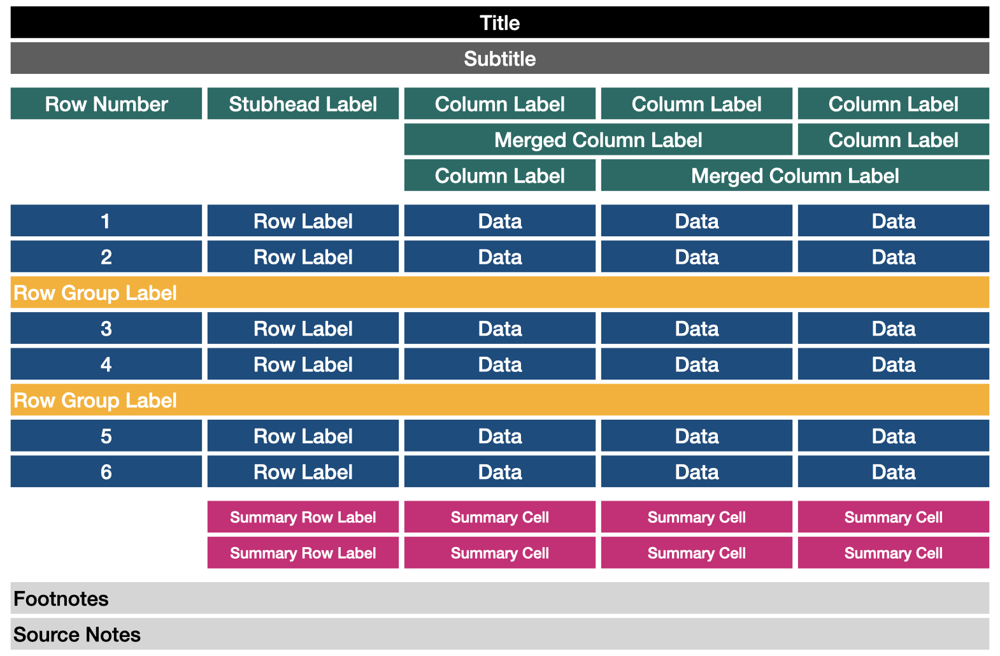
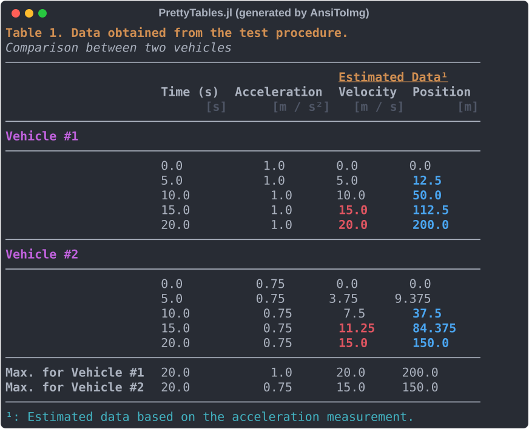

PrettyTables.jl
PrettyTables.jl prints data in formatted tables. It was originally inspired by the functionality provided by ASCII Tables.
The same table can be rendered by the following back ends:
| Back End | Keyword | Output |
|---|---|---|
| Text | backend = :text | Table for the terminal, decorated with ANSI escape sequences |
| HTML | backend = :html | HTML table, rendered by Jupyter, Pluto, and Documenter |
| LaTeX | backend = :latex | tabular environment |
| Markdown | backend = :markdown | Markdown table |
| Typst | backend = :typst | Typst table function |
| Excel | backend = :excel | Excel worksheet (requires XLSX.jl) |
| Word | backend = :docx | Word table (requires WriteDocx.jl) |
PrettyTables.jl allows printing the data together with some table sections, which can be modified by the user to obtain the desired output. The sections currently available are:

This design is heavily inspired by the R package gt, but the API is quite different due to the differences between the R and Julia languages.
Installation
julia> using Pkg
julia> Pkg.add("PrettyTables")Example
The following example shows some of the features available in PrettyTables.jl. The highlighters, the table format, and the table style are defined using the backend-agnostic types Highlighter, TableFormat, and TableStyle. Hence, the same configuration can be used with every back end.
# == Creating the Table ====================================================================
v1_t = 0:5:20
v1_a = ones(length(v1_t)) * 1.0
v1_v = @. 0 + v1_a * v1_t
v1_d = @. 0 + v1_a * v1_t^2 / 2
v2_t = 0:5:20
v2_a = ones(length(v2_t)) * 0.75
v2_v = @. 0 + v2_a * v2_t
v2_d = @. 0 + v2_a * v2_t^2 / 2
table = [
v1_t v1_a v1_v v1_d
v2_t v2_a v2_v v2_d
]
# == Configuring the Table =================================================================
title = "Table 1. Data obtained from the test procedure."
subtitle = "Comparison between two vehicles"
column_labels = [
[EmptyCells(2), MultiColumn(2, "Estimated Data")],
["Time (s)", "Acceleration", "Velocity", "Position"],
[
styled"{(foreground=gray):[s]}",
styled"{(foreground=gray):[m / s²]}",
styled"{(foreground=gray):[m / s]}",
styled"{(foreground=gray):[m]}",
],
]
row_group_labels = [
1 => "Vehicle #1",
6 => "Vehicle #2"
]
summary_rows = [
(data, j) -> maximum(@views data[ 1:5, j]),
(data, j) -> maximum(@views data[6:10, j]),
]
summary_row_labels = [
"Max. for Vehicle #1",
"Max. for Vehicle #2",
]
footnotes = [
(:column_label, 1, 3) => "Estimated data based on the acceleration measurement."
]
highlighters = [
Highlighter(
(data, i, j) -> (j == 3) && (data[i, j] > 10),
Face(; weight = :bold, foreground = :red)
),
Highlighter(
(data, i, j) -> (j == 4) && (data[i, j] > 10),
Face(; weight = :bold, foreground = :blue)
),
]
table_format = TableFormat(; @no_vertical_lines)
style = TableStyle(;
column_label = Face(; weight = :bold),
first_line_merged_column_label = Face(;
weight = :bold, foreground = :yellow, underline = true
),
footnote = Face(; foreground = :cyan),
row_group_label = Face(; weight = :bold, foreground = :magenta),
subtitle = Face(; slant = :italic),
title = Face(; weight = :bold, foreground = :yellow),
)julia> pretty_table(
table;
column_labels,
footnotes,
highlighters,
row_group_labels,
style,
subtitle,
summary_row_labels,
summary_rows,
table_format,
title,
)
Passing backend = :html to the same call renders the table in HTML:
pretty_table(
HTML,
table;
column_labels,
footnotes,
highlighters,
row_group_labels,
style,
subtitle,
summary_row_labels,
summary_rows,
table_format,
title,
)| Table 1. Data obtained from the test procedure. | ||||
| Comparison between two vehicles | ||||
| Estimated Data1 | ||||
|---|---|---|---|---|
| Time (s) | Acceleration | Velocity | Position | |
| [s] | [m / s²] | [m / s] | [m] | |
| Vehicle #1 | ||||
| 0.0 | 1.0 | 0.0 | 0.0 | |
| 5.0 | 1.0 | 5.0 | 12.5 | |
| 10.0 | 1.0 | 10.0 | 50.0 | |
| 15.0 | 1.0 | 15.0 | 112.5 | |
| 20.0 | 1.0 | 20.0 | 200.0 | |
| Vehicle #2 | ||||
| 0.0 | 0.75 | 0.0 | 0.0 | |
| 5.0 | 0.75 | 3.75 | 9.375 | |
| 10.0 | 0.75 | 7.5 | 37.5 | |
| 15.0 | 0.75 | 11.25 | 84.375 | |
| 20.0 | 0.75 | 15.0 | 150.0 | |
| Max. for Vehicle #1 | 20.0 | 1.0 | 20.0 | 200.0 |
| Max. for Vehicle #2 | 20.0 | 0.75 | 15.0 | 150.0 |
| 1 Estimated data based on the acceleration measurement. | ||||
Where to Go Next
- Quick Start: the essential commands to print a table.
- Usage: the keywords available in every back end and the specification of the table sections, formatters, and highlighters.
- Faces: how the decorations are described using the faces of StyledStrings.jl.
- Table Format and Style: how to configure the table lines and the decoration of each section once for every back end.
- The pages in Back Ends: the options specific to each back end and some examples.